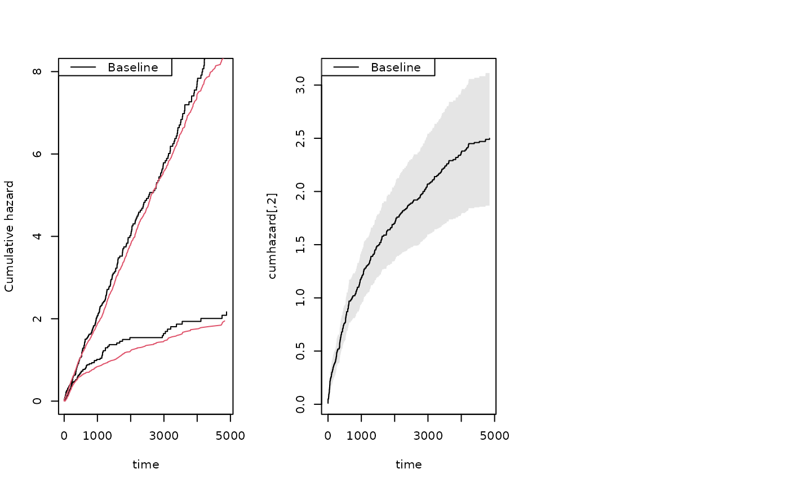
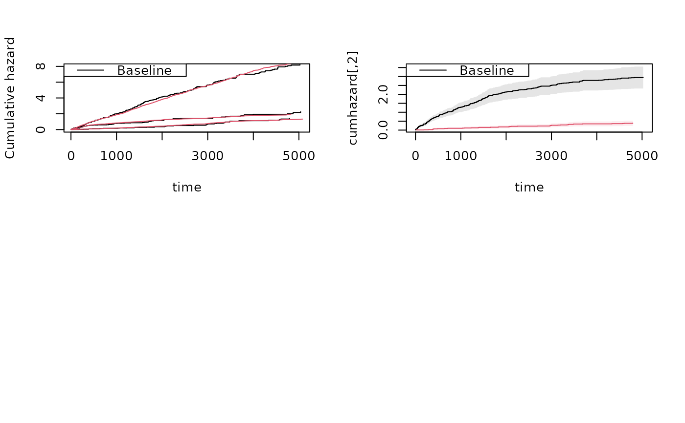

Simulate recurrent events with a single event type and a terminal event
Source:R/recurrent.marginal.R
sim_recurrent.RdA convenience wrapper around sim_recurrentII for the common
case of a single recurrent event type. Frailty and censoring options are
passed through to sim_recurrent_list.
Arguments
- n
Number of subjects to simulate.
- cumhaz
Two-column matrix
(time, cumhaz)giving the cumulative hazard of the recurrent event.- death.cumhaz
Two-column matrix
(time, cumhaz)giving the cumulative hazard of the terminal event. IfNULL, no terminal event is included.- r1
Optional numeric vector of length
nof subject-specific relative risks for the recurrent event.- rd
Optional numeric vector of length
nof subject-specific relative risks for the terminal event.- rc
Optional numeric vector of length
nof subject-specific multipliers for the exponential censoring rate.- ...
Further arguments passed to
sim_recurrent_list, includingdependence,var.z,gap.time, andmax.recurrent.
Examples
data(CPH_HPN_CRBSI)
dr <- CPH_HPN_CRBSI$terminal
base1 <- CPH_HPN_CRBSI$crbsi
base4 <- CPH_HPN_CRBSI$mechanical
## Single recurrent event type, with and without terminal event
rr <- sim_recurrent(5, base1)
dlist(rr, . ~ id, n = 0)
#> id: 1
#> entry time status dtime fdeath death start stop
#> 1 0.0000 471.8501 1 5110 0 0 0.0000 471.8501
#> 6 471.8501 2758.6611 1 5110 0 0 471.8501 2758.6611
#> 11 2758.6611 3080.4361 1 5110 0 0 2758.6611 3080.4361
#> 16 3080.4361 3735.9017 1 5110 0 0 3080.4361 3735.9017
#> 21 3735.9017 4266.0364 1 5110 0 0 3735.9017 4266.0364
#> 26 4266.0364 5110.0000 0 5110 0 0 4266.0364 5110.0000
#> ------------------------------------------------------------
#> id: 2
#> entry time status dtime fdeath death start stop
#> 2 0.00000 50.08173 1 5110 0 0 0.00000 50.08173
#> 7 50.08173 793.56375 1 5110 0 0 50.08173 793.56375
#> 12 793.56375 1356.17942 1 5110 0 0 793.56375 1356.17942
#> 17 1356.17942 1449.38995 1 5110 0 0 1356.17942 1449.38995
#> 22 1449.38995 1816.13098 1 5110 0 0 1449.38995 1816.13098
#> 27 1816.13098 2197.32945 1 5110 0 0 1816.13098 2197.32945
#> 31 2197.32945 2253.72768 1 5110 0 0 2197.32945 2253.72768
#> 35 2253.72768 2696.20258 1 5110 0 0 2253.72768 2696.20258
#> 39 2696.20258 2724.84385 1 5110 0 0 2696.20258 2724.84385
#> 43 2724.84385 3131.42112 1 5110 0 0 2724.84385 3131.42112
#> 47 3131.42112 3278.01918 1 5110 0 0 3131.42112 3278.01918
#> 50 3278.01918 4367.04910 1 5110 0 0 3278.01918 4367.04910
#> 52 4367.04910 4456.09312 1 5110 0 0 4367.04910 4456.09312
#> 53 4456.09312 4469.28724 1 5110 0 0 4456.09312 4469.28724
#> 54 4469.28724 5110.00000 0 5110 0 0 4469.28724 5110.00000
#> ------------------------------------------------------------
#> id: 3
#> entry time status dtime fdeath death start stop
#> 3 0.000000 2.383927 1 5110 0 0 0.000000 2.383927
#> 8 2.383927 10.929326 1 5110 0 0 2.383927 10.929326
#> 13 10.929326 133.718633 1 5110 0 0 10.929326 133.718633
#> 18 133.718633 440.523966 1 5110 0 0 133.718633 440.523966
#> 23 440.523966 716.827169 1 5110 0 0 440.523966 716.827169
#> 28 716.827169 986.441839 1 5110 0 0 716.827169 986.441839
#> 32 986.441839 1451.951208 1 5110 0 0 986.441839 1451.951208
#> 36 1451.951208 1495.922563 1 5110 0 0 1451.951208 1495.922563
#> 40 1495.922563 1509.484729 1 5110 0 0 1495.922563 1509.484729
#> 44 1509.484729 4491.929101 1 5110 0 0 1509.484729 4491.929101
#> 48 4491.929101 4840.395064 1 5110 0 0 4491.929101 4840.395064
#> 51 4840.395064 5110.000000 0 5110 0 0 4840.395064 5110.000000
#> ------------------------------------------------------------
#> id: 4
#> entry time status dtime fdeath death start stop
#> 4 0.0000 299.9774 1 5110 0 0 0.0000 299.9774
#> 9 299.9774 899.1034 1 5110 0 0 299.9774 899.1034
#> 14 899.1034 1177.2662 1 5110 0 0 899.1034 1177.2662
#> 19 1177.2662 2810.7915 1 5110 0 0 1177.2662 2810.7915
#> 24 2810.7915 3259.0995 1 5110 0 0 2810.7915 3259.0995
#> 29 3259.0995 3309.8473 1 5110 0 0 3259.0995 3309.8473
#> 33 3309.8473 3451.7264 1 5110 0 0 3309.8473 3451.7264
#> 37 3451.7264 3478.1402 1 5110 0 0 3451.7264 3478.1402
#> 41 3478.1402 3783.9692 1 5110 0 0 3478.1402 3783.9692
#> 45 3783.9692 5110.0000 0 5110 0 0 3783.9692 5110.0000
#> ------------------------------------------------------------
#> id: 5
#> entry time status dtime fdeath death start stop
#> 5 0.00000 50.58474 1 5110 0 0 0.00000 50.58474
#> 10 50.58474 1268.95072 1 5110 0 0 50.58474 1268.95072
#> 15 1268.95072 1342.03225 1 5110 0 0 1268.95072 1342.03225
#> 20 1342.03225 1560.60239 1 5110 0 0 1342.03225 1560.60239
#> 25 1560.60239 1681.13354 1 5110 0 0 1560.60239 1681.13354
#> 30 1681.13354 2168.41035 1 5110 0 0 1681.13354 2168.41035
#> 34 2168.41035 2320.01348 1 5110 0 0 2168.41035 2320.01348
#> 38 2320.01348 2838.19302 1 5110 0 0 2320.01348 2838.19302
#> 42 2838.19302 3371.30305 1 5110 0 0 2838.19302 3371.30305
#> 46 3371.30305 4160.20685 1 5110 0 0 3371.30305 4160.20685
#> 49 4160.20685 5110.00000 0 5110 0 0 4160.20685 5110.00000
rr <- sim_recurrent(5, base1, death.cumhaz = dr)
dlist(rr, . ~ id, n = 0)
#> id: 1
#> entry time status dtime fdeath death start stop
#> 1 0 65.63692 0 65.63692 1 1 0 65.63692
#> ------------------------------------------------------------
#> id: 2
#> entry time status dtime fdeath death start stop
#> 2 0 119.6153 0 119.6153 1 1 0 119.6153
#> ------------------------------------------------------------
#> id: 3
#> entry time status dtime fdeath death start stop
#> 3 0 76.00871 0 76.00871 1 1 0 76.00871
#> ------------------------------------------------------------
#> id: 4
#> entry time status dtime fdeath death start stop
#> 4 0.00000 86.99597 1 225.3665 1 0 0.00000 86.99597
#> 6 86.99597 225.36651 0 225.3665 1 1 86.99597 225.36651
#> ------------------------------------------------------------
#> id: 5
#> entry time status dtime fdeath death start stop
#> 5 0 80.39626 0 80.39626 1 1 0 80.39626
## Verify that estimated rates recover the true baselines (increase n for precision)
rr <- sim_recurrent(100, base1, death.cumhaz = dr)
par(mfrow = c(1, 3))
mets:::showfitsim(causes = 1, rr, dr, base1, base1)
## Shared frailty across all processes
rr <- sim_recurrent(100, base1, death.cumhaz = dr, dependence = 1, var.z = 0.4)
dtable(rr, ~death + status)
#>
#> status 0 1
#> death
#> 0 15 228
#> 1 85 0
## Two event types; second type uses the mechanical complication rate
set.seed(100)
rr <- sim_recurrentII(100, base1, base4, death.cumhaz = dr)
dtable(rr, ~death + status)
#>
#> status 0 1 2
#> death
#> 0 10 295 39
#> 1 90 0 0
par(mfrow = c(2, 2))

mets:::showfitsim(causes = 2, rr, dr, base1, base4)
## Three event types and two causes of death via sim_recurrent_list
set.seed(100)
cumhaz <- list(base1, base1, base4)
drl <- list(dr, base4)
rr <- sim_recurrent_list(100, cumhaz, death.cumhaz = drl, dependence = 0)
dtable(rr, ~death + status)
#>
#> status 0 1 2 3
#> death
#> 0 4 232 268 33
#> 1 70 0 0 0
#> 2 26 0 0 0
mets:::showfitsimList(rr, cumhaz, drl)
